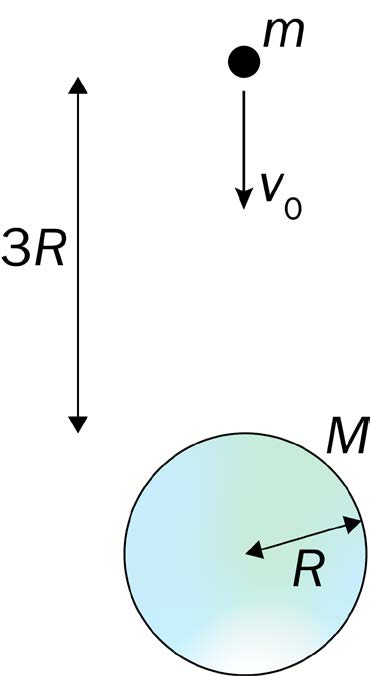

En asteroide med masse \(m\) faller mot jorda. Asteroiden har farten \(v_0\) når avstanden fra jordoverflata er \(3R\), og farten \(v\) like før den treffer jordoverflata. Jorda har radius \(R\) og masse \(M\).
Se bort fra luftmotstand.
Hvilket uttrykk er riktig for å regne ut farten \(v\)?
